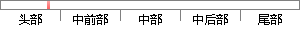

问卷调查是一种通过提问的结构化调查方式，调查的表现形势以及提问的序列还有给出供被调查对象选择的答案都是固定不变的，使用文字表现出来，这使得问卷调查的结果很容易量化，并使得问卷调查的结果更加易于统计和分析。
片段位置图

相似结果|
1
原句片段：问卷调查是一种通过提问的结构化调查方式，调查的表现形势以及提问的序列还有给出供被
相似片段 1：问卷调查法是一种结构化的调查方式,调查的表现形式和提问的序列,还有答案的给出...使会计法适应形势下经济社会的发展,财政部决定通过开展《会计法》问卷调查,广求...
相似片段 2：其一问卷调查法的优点是能节省时间,人力和体力。其二问卷调查结果更加容易量化。问卷调查法是一种结构化的调查方式,调查的表现形式和提问的序列,还有答案的给出都是...
相似片段 3：其一问卷调查法的优点是能节省时间,人力和体力。其二问卷调查结果更加容易量化。问卷调查法是一种结构化的调查方式,调查的表现形式和提问的序列,还有答案的给出都是...
相似片段 4：问卷调查法是一种结构化的调查方式,调查的表现形式和提问的序列,还有答案的给出都是固定不变的,是用文字的方法表现出来,因此,这种方式好量化。 3、结果更容易...
相似片段 5：问卷调查法是一种结构化的调查方式,调 查的表现形式和提问的序列,还有答案的给出都是固定不变的,是用文字的 方法表现出来,因此,这种方式好量化。其三,问卷调查...
相似片段 6：1、问卷调查法的优点是能节省时间,人力和体力。 2、问卷调查结果更加容易量化。问卷调查法是一种结构化的调查方式,调查的表现形式和提问的序列,还有答案的给出都是...
相似片段 7：其一问卷调查法的优点是能节省时间,人力和体力。其二问卷调查结果更加容易量化。问卷调查法是一种结构化的调查方式,调查的表现形式和提问的序列,还有答案的给出都是...
|
※ 片段修改建议 ※
近似词参考：- 通过：经由过程
- 提问：发问
- 调查：查询拜访 观察
- 方式：体例 体式格局 方法
- 调查：查询拜访 观察
- 表现：表示 浮现 施展阐发 体现 显露 显示
- 形势：情势
- 以及：和
- 提问：发问
- 还有：另有
- 调查：查询拜访 观察
- 查对：核对
- 对象：工具
- 答案：谜底
- 固定：牢固
- 不变：稳定
- 使用：利用
- 文字：笔墨
- 结果：成果 成绩 成效 后果 了局 效果
- 容易：轻易
- 结果：成果 成绩 成效 后果 了局 效果
- 更加：加倍 越发 更为
- 分析：阐发 阐明 剖析
系统自动生成语句：问卷查询拜访是一种经由过程发问的结构化查询拜访体例，查询拜访的表示情势和发问的序列另有给出供被查询拜访工具选择的谜底都是牢固稳定的，利用笔墨表示出来，这使得问卷查询拜访的成果很轻易量化，并使得问卷查询拜访的成果加倍易于统计和阐发。
注：本片段修改建议为系统自动生成，仅供参考。